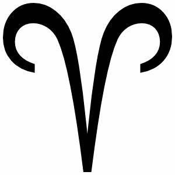
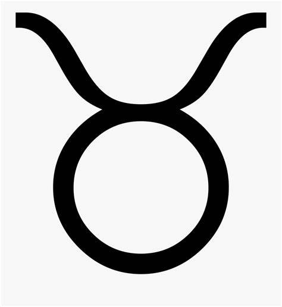
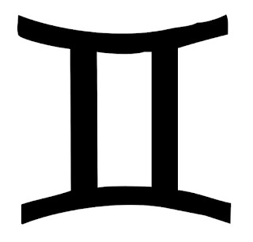
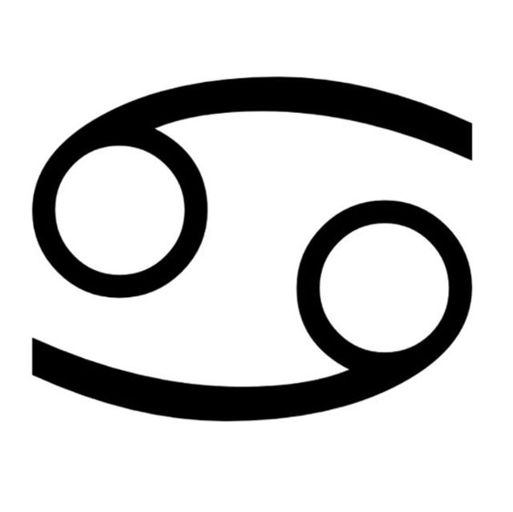
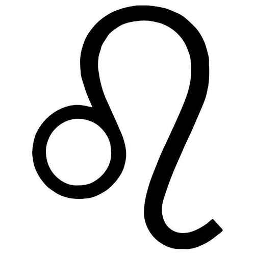
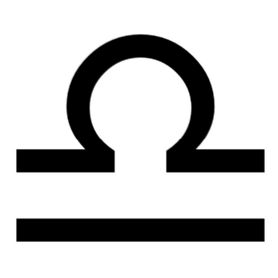
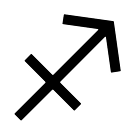
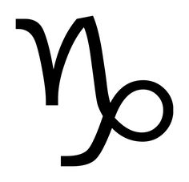
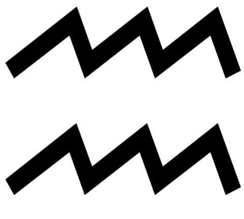
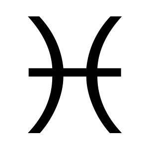

How is your personality linked to your Zodiac sign?
Astrology practicioners say that your personality, opinions, and emotions are highly influenced by the Sun's position on the date and time you were born. They believe that the location of the planets on your birth chart and the energy sensed in the stars during that time help make up your traits and faults.
Aries
- Strong, bold personalities
- Possess great leadership skills
- Competitive and like things done their way
- Spontaneous; the life of the party
- Short tempered but are also thoughtful and generous
- Represented by the Ram
Taurus
- Dependable and reliable as friends
- Honest and trustworthy people
- Practical realists who faces the facts
- Seem stubborn but are just really determined people
- Love maintaining stablitity and consistency
- Represented by the Bull
Gemini
- Unpredictable, enthusiastic people
- You can't get bored of them
- Sociable and talkative
- Observant, perceptive, and full of thoughts
- Known to have dual personalities
- Represented by the twins, Castor and Pollux
Cancer
- Loyal and protective of their loved ones
- Identified to be homebodies
- Prefer deep and meaningful talks
- Might come of as moody and emotional
- Likes having only a few close friends
- Represented by the Crab
Leo
- Very adventurous and optimistic
- Like to unwind every once in a while
- Easily trusting and generous in nature
- Also natural leaders
- Loves luxury and standing out
- Represented by the Lion
Virgo

- Dedicated and hard-working people
- Takes their responsibilities seriously
- Analytical, clever skeptics
- Organized perfectionists
- Modest and humble by nature
- Represented by the Goddess of Wheat and Agriculture
Libra
- Highly intelligent and are critical thinkers
- Stands for truth and justice
- Intuitive and observant people
- Uses their tact to calculate their actions
- Would rather apologize than lose a friend
- Represented by the Scales of Justice
Scorpio

- Secretive and mysterious
- May take a while to warm up to you
- Strong-willed and strives hard
- Picky with their friends
- May be blatantly honest at times
- Represented by the Scorpion
Sagittarius
- Witty and hilarious people
- They are amazing conversationalists
- Has a good sense of self
- Tend to often inspire people to be their best selves
- Lovers of freedom
- Represented by the Archer
Capricorn
- Capricorns are grounded and realistic
- They're practical and resourceful people
- Very disciplined and driven by success
- Down to earth and modest
- May come off as pessimistic
- Represented by the Goat
Aquarius
- Independent and doesn't like being told
- Tends to be rebellious
- Very curious about the world
- Prefers living a simple life
- Enjoys quality alone time
- Represented by the Water Bearer
Pisces
- Empathetic and natural healers
- Incredibly generous people
- Very caring and might get taken advantage of
- May be laid back and act lazy often
- Can express strong creativity
- Represented by a pair Fish